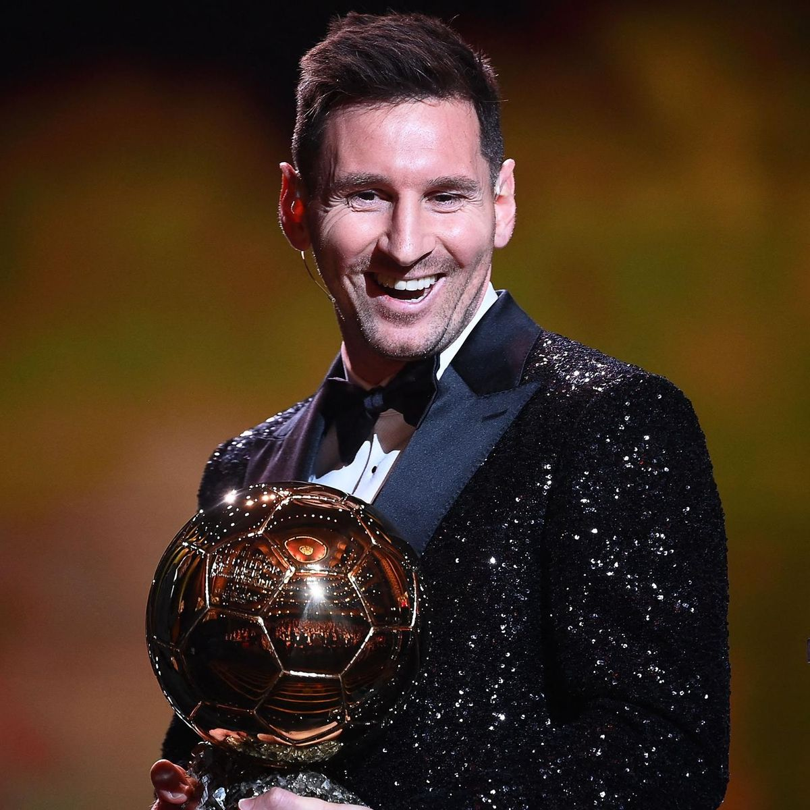
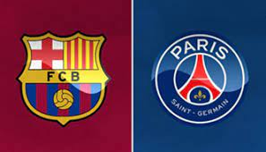
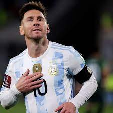

Prijzen

De trofeeënkast van Lionel Messi puilt uit. In totaal veroverde hij met Barcelona maar liefst 35 prijzen. Messi heeft zo de grootste prijzenkast ooit in La Liga (spaanse competitie). Zo staat Andrés Iniesta op de tweede plaats met 32 prijzen, nadien volgen Gerard Piqué en Sergio Busquets met 30 stuks.
Messi’s 1e prijs als profvoetballer was de Spaanse titel in het seizoen 2004-2005. Het seizoen daarna volgde al meteen eindwinst in de Champions League, die hij 4 keer zou winnen met Barça. De laatste Cup met Grote Oren dateert voor Messi (en Barcelona) intussen al van 2015. Messi’s laatste trofee in blauw-rood was de Copa del Rey afgelopen seizoen.
De prijzenkast van Messi bij Barcelona:
10x Spaans landskampioen,
7x Spaanse beker (Copa del Rey),
8x Spaanse Supercup,
4x Champions League,
3x Europese Supercup en
3x Wereldbeker voor clubs.
verder heeft hij ook nog veel individuele prijzen gewonnen:
Meeste Ballon d'Ors: 6,
Meeste prijzen met één club: 34,
Vaakst uitgeroepen tot beste speler in La Liga: 11,
Meeste La Liga-titels als niet-Spanjaard: 10,
Enige voetballer die Laureus World Sports Awards wint (2020) en de
Enige speler die Ballon d'Or, FIFA World Player, Pichichi Trophy en Gouden Schoen in één seizoen wint
Clubs

Toen messi 5 jaar oud was ging hij voetballen bij de plaatselijke club Grandoli. Zijn vader leidde deze club, het voetballen zat dus al in de familie. Op zijn zevende mocht hij zich inschrijven bij Newell’s Old Boys en op zijn 14e kwam hij terecht bij de jeugdopleiding van FC Barcelona. Op 16 november 2003 maakte hij zijn debuut in het elftal van de Catalaanse club. Met zijn 16 jaar was hij de op drie na jongste debutant van de geschiedenis van FC Barcelona. Bijna een jaar later, op 16 oktober 2004, maakte hij zijn officiële debuut voor Barcelona. Op 1 mei 2005 heeft hij zijn eerste doelpunt voor de club gemaakt in een duel tegen Albacete. Hij was met zijn 17 jaar de jongste doelpuntmaker ooit van FC Barcelona. daarna heeft hij natuurlijk vele jaren voor FC Barcelona gespeeld en hij heeft Barcelona heel erg geholpen naar het bereiken van hun succes. hij speelde bij Barcelona tot aan de zomer van 2021. dat kwam door de nieuwe regels in Spanje want hij wou eigenlijk liever bij Barcelona blijven. Dus hij besloot op naar de Franse club Paris Saint Germain te gaan waar hij nu speelt. ik geloof dat hij in zijn tijd bij Paris Saint Germain ook nog vele trofeeën gaat winnen.
Internationaal

Niet alleen is Lionel Messi een belangrijke speler bij FC Barcelona, maar ook in het nationale elftal van Argentinië kan hij niet worden gemist. In hetzelfde jaar dat hij officieel zijn debuut maakte voor FC Barcelona, debuteerde hij ook in het elftal onder de 20 van Argentinië. Dat was in een vriendschappelijke wedstrijd tegen Paraguay. Vervolgens won hij met datzelfde elftal in 2005 het WK voetbal onder de 20 dat in Nederland werd gehouden. Op 17 augustus 2005 was zijn officiële debuut bij het nationale elftal in een wedstrijd tegen Hongarije. Echter werd hij er na 2 minuten speeltijd al uitgestuurd door de scheidsrechter, omdat hij een slaande beweging maakte naar de tegenstander. Achteraf bleek dat hij probeerde los te komen van de tegenstander. Op 1 maart 2006 maakte hij in een wedstrijd tegen Kroatië zijn eerste doelpunt voor het elftal van Argentinië. vanaf 2011 was Messi aanvoerder van Argentinië. Messi heeft nog niet veel gewonnen met Argentinië, maar hij wil dat wel nog graag voordat hij stopt met voetballen. Hij wil namelijk graag een keer het WK winnen. In 2014 was hij heel dichtbij. hij stond namelijk met Argentinië in de finale tegen Duitsland. maar die wedstrijd hadden ze verloren. Dus ondanks goede prestaties heeft Messi de reputatie en verwachtingen die hij bij zijn club heeft opgebouwd nog niet kunnen waarmaken bij de nationale ploeg van Argentinië.